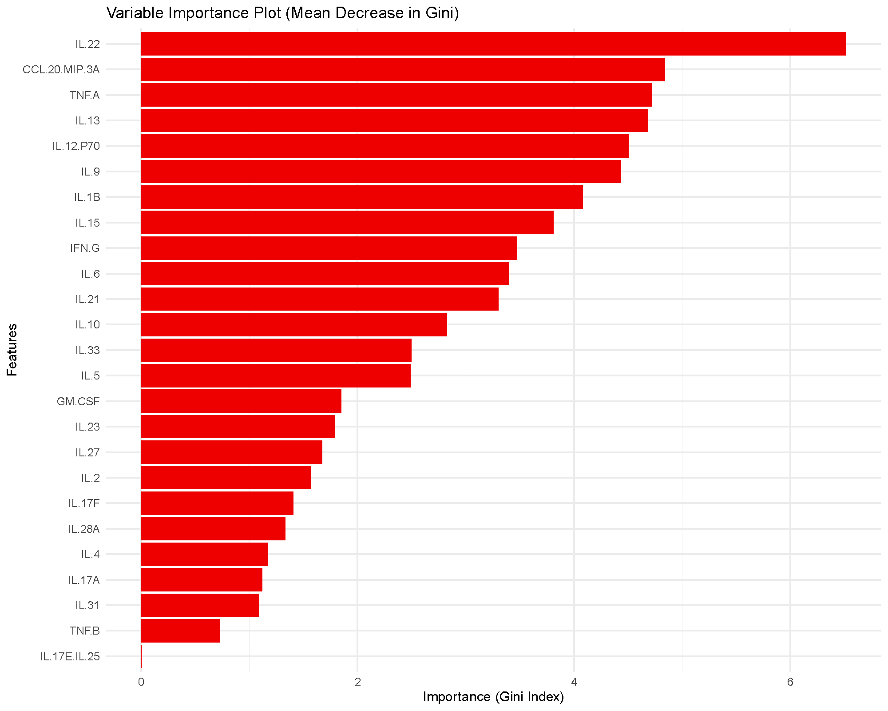
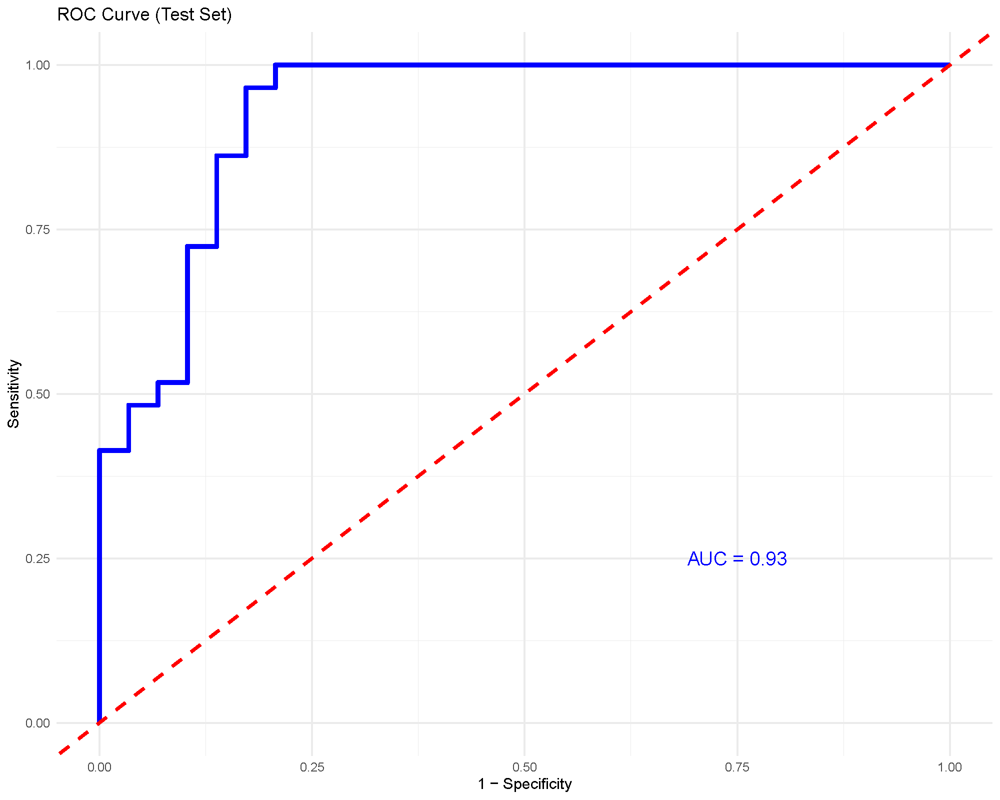
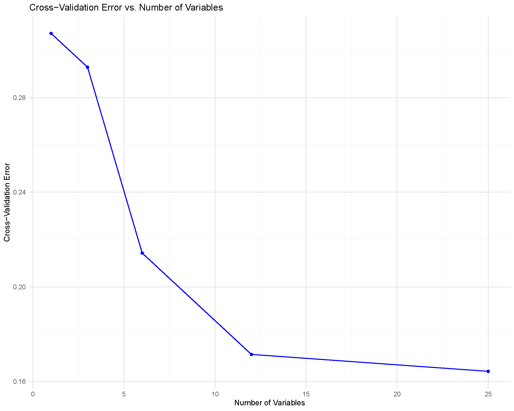

Understanding Random Forest
Source:vignettes/Understanding-Random-Forest.Rmd
Understanding-Random-Forest.RmdWhen to use Random Forest
Random Forest is a supervised classification method that works well when you want a robust nonlinear classifier and a ranked view of feature importance. It is often a good first machine-learning method because it usually performs well with minimal tuning compared with more sensitive boosting methods.
When not to use Random Forest
Random Forest is usually not the best first choice when:
- the outcome is numeric rather than categorical
- you need an unsupervised view of structure before building a classifier
- the dataset is too small for a meaningful train/test or validation workflow
Example context
This example uses the ExampleData1 dataset after
filtering to subjects with Pre-Diabetes (PreT2D) and Type 2 Diabetes
(T2D).
Which app arguments matter most
The highest-value settings to understand are:
-
Grouping Column: defines the classes the model is trying to predict. -
Number of Trees: affects model stability and runtime. -
Number of Variables to Split: controls how many predictors are considered at each tree split. -
Train Fraction: determines how much data is used for training versus held-out testing. -
Plot ROC (Binary Comparison Only): adds an ROC view when the comparison has exactly two classes. -
Run RFCV,Number of Folds, andStep Size: control the feature-selection cross-validation view.
For app users, the safest workflow is to change one of these at a time and then check whether the held-out or cross-validated performance is improving in a meaningful way.
What outputs matter most
Variable importance plot

The bars rank cytokines by how much they reduce node impurity across the forest. Higher bars indicate greater influence on the fitted model, but they do not provide a formal statistical test or a universal cutoff.
In practice, this plot is most useful for prioritization. Cytokines near the top of the ranking are the ones the model relied on more heavily for classification.
ROC and AUC

For binary classification, the ROC curve shows the tradeoff between sensitivity and specificity across thresholds. The AUC summarizes how well the model separates the two groups overall.
An AUC around 0.93, as shown here, suggests strong discrimination in this particular comparison. Even so, it should still be considered together with the train/test split and any cross-validation output.
RFCV feature-selection curve

This plot helps answer a practical question: how many cytokines do we need before classification error stops improving much?
The usual reading strategy is to look for an elbow or plateau. If the error rate stops improving meaningfully after a modest number of variables, that smaller feature set may be preferable because it is easier to interpret and report.
Common cautions
Important limits to keep in mind:
- Variable importance is not the same thing as statistical significance.
- Very strong training performance can still coexist with weaker test performance.
- Small datasets can make train/test splits unstable, so rerunning with the same seed or checking cross-validation outputs is useful.
- If class balance is poor, accuracy alone can be misleading.
Practical guidance for the main arguments
- Number of Trees: increase this if the importance ranking or performance looks unstable between runs.
- Number of Variables to Split: start near the default behavior, then adjust only if performance is clearly underwhelming.
- Train Fraction: larger training sets can improve fitting, but they leave less held-out data for honest checking.
- Number of Folds: more folds can give a steadier validation estimate, but they also cost more computation.
- Step Size: smaller steps make RFCV more granular, while larger steps make it faster but coarser.
How to reproduce the result in the app
- Filter the dataset to the classes you want to compare.
- Choose
Random Forest. - Set
Grouping Column,Number of Trees,Number of Variables to Split, andTrain Fraction. - Turn on
Plot ROC (Binary Comparison Only)andRun RFCVif you want stronger validation context. - Read the variable importance plot together with the summary and validation outputs.

What to read next
Related articles:
- Understanding XGBoost for a more tuning-sensitive boosting alternative.
- Understanding (s)PLS-DA for supervised multivariate separation with interpretable latent components.
- Understanding Boxplots and Violin Plots when top-ranked features need raw-distribution follow-up.
Last updated: April 03, 2026